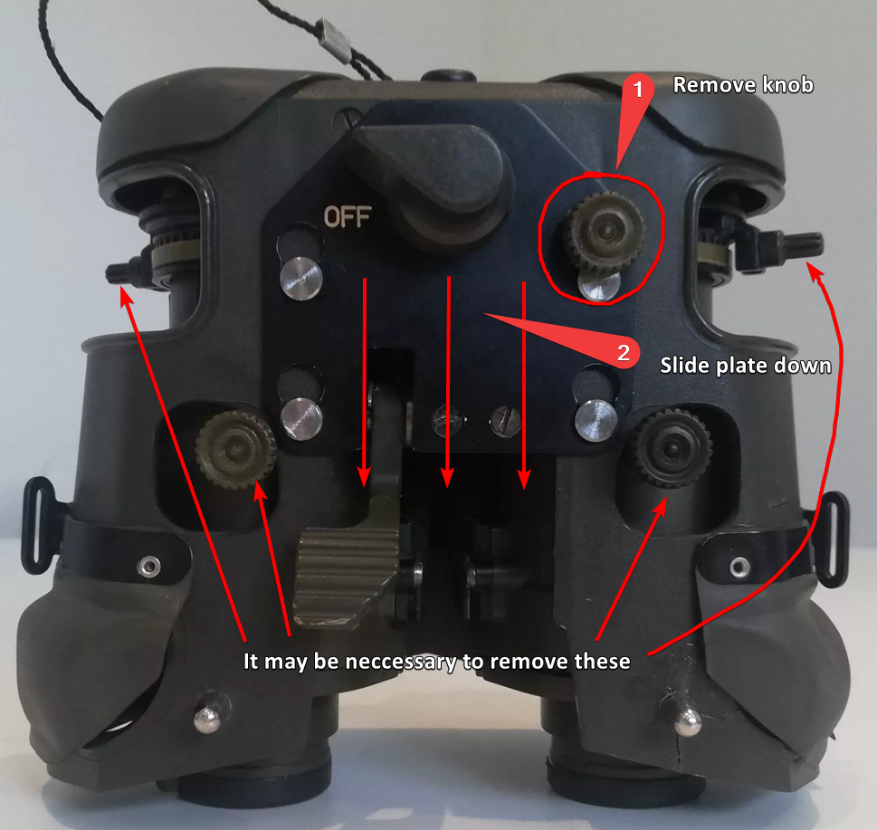
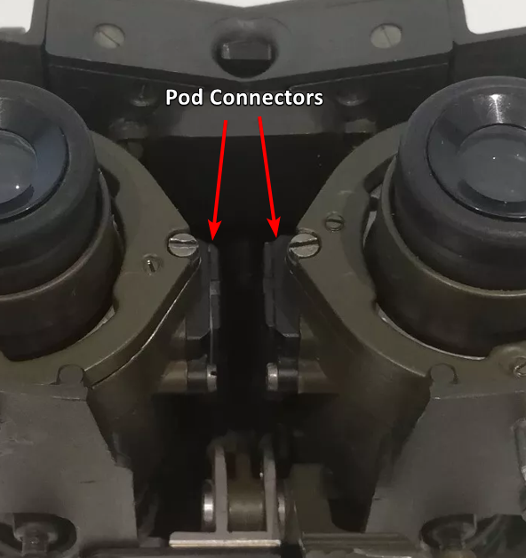
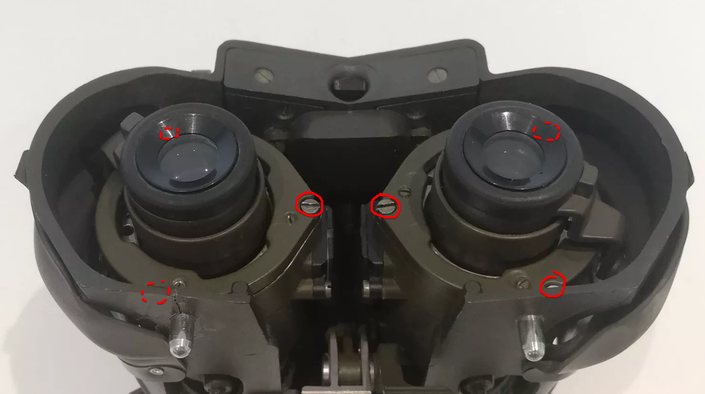
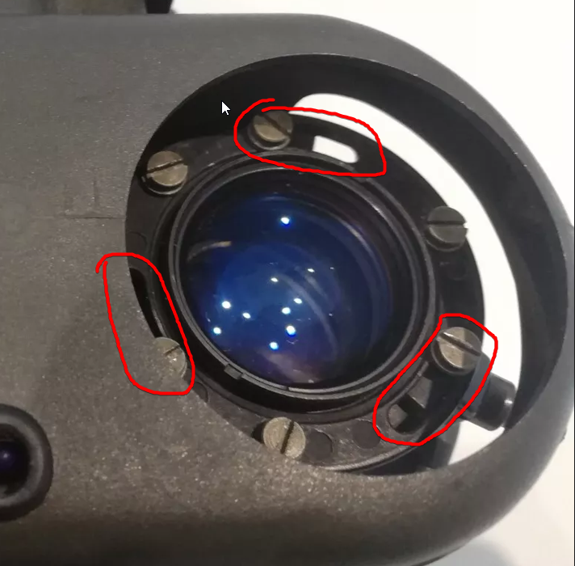

Fero D51 info
How to disassemble the d51 and put tubes in.
Please note! This is done from memory and I don't have a unit anymore to take better photos. If you have some, send them to me!

First remove the outer shell from the device. Go to the power switch panel, there will be a green threaded knob that holds it in place. Unscrew it, then the plate should slide down and let you remove that plate and the pods from the outer shell. There is a connector inside to interface with the body. It might be necessary to remove any other similar looking green knobs to let the pods come out.

Each pod has a connector screwed to the side with a wire going to it. These have the contact pins inside for the tubes. they face inwards, so you will need to mess with the pod assembly to seperate the two so you can unscrew them.

With the pods out you can remove the eyepices more easily. There is a plate that has 3 screws around the edges, remove those screws and the plate will be loose. You can then grab the eyepiece and pull it out. The eyepiece assembly should just pull out, it has an oring so it might be tight in there. It doesn't thread in like on pvs14 etc.
You repeat the same process in reverse to reassemble, but you will need to collimate the system. The eyepieces allow for this.Loosen the silver ring inside the eyepiece assembly and you can then slide the eyepieces up down left or right to collimate. Tighten the ring when done, this is annoying because when tightening, the lens can move and you lose your adjustment. From memory there are small locking grub screws on that ring, and also on the eyepiece top plate to help push the whole thing against the tube / take up slack between the plate and the silver ring.
If you need to adjust the position / range of the eyepiece focus adjustment arm, you will need to do this before collimating. You have to rotate the whole lens, the arm is one piece with the rest of the eyepiece lens cell.

The infinity stop for the objective lenses is adjustable. There is a plastic stop attached to a ring on the front lens that gets blocked by part of the lens housing. You loosen three screws and then you can rotate this ring relative to the lens body to set the maximum amount you can rotate the lens by, the loosened screws travel in slots cut into the ring.